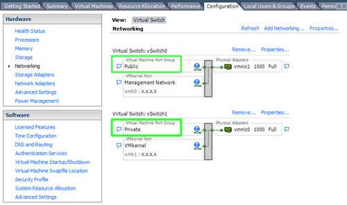
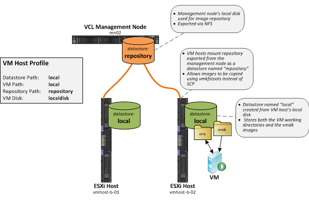
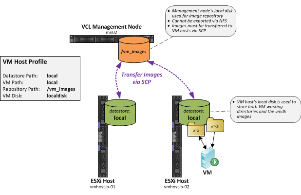
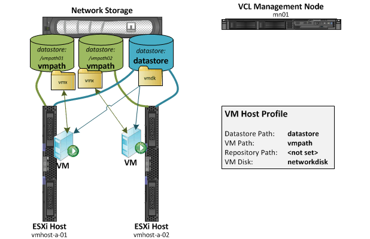

VMware Configuration
Terminology
VM Host
- A VM host is a physical computer running a VMware hypervisor
- A VCL computer entry must be added for each VM host (Manage Computers > Edit Computer Information)
- After the computer has been added to VCL, it is designated as a VM host by changing the computer state to vmhostinuse (Manage Computers > Computer Utilities)
VM
- A VM is a virtual machine managed by VCL
- A computer entry must be added to VCL for each VM (Manage Computers > Edit Computer Information)
- Each VM must be assigned to a VM host (Virtual Hosts > VM Hosts tab > Configure Host)
- VMs do not need to be created manually in VMware, VCL automatically creates and deletes VMs
VM Host Profile
- A VM host profile contains several parameters which describe how a VM host is configured so that VCL knows how to manage it
- Each VM host is assigned a VM host profile
- A VM host profile may be assigned to multiple VM hosts if they are configured identically
- VM host profiles may be added or modified via Virtual Hosts > VM Host Profiles tab
VMware Products Supported
- VMware Server 2.x
- VMware ESX 3.5 - 4.x
- VMware ESXi 4.x
- VMware ESXi 5.x
VM Host Management Options
The VCL management node must be able to control the VM host and the VMs running on it. VMware provides several different ways of doing this. VCL currently supports the following methods for remote VM host management:
- VMware vSphere SDK
- Use SSH to execute commands directly on the VM (not officially supported by VMware)
The vSphere SDK can only be used if management is not restricted due to the VMware license key installed on the host. This mainly affects hosts running the free version of ESXi. Remote management using any of the methods supported by VMware is restricted once a free license key is entered.
If remote management is restricted, the VM host can be managed if SSH is enabled on it. VCL will execute vim-cmd and other commands on the VM host via SSH.
How to enable SSH on the VM host:
VMware Server 2.x
Enable the SSH daemon and configure identity key authentication according to the underlying VM host OS
ESX/ESXi 3.5 & 4.0
- Connect to the console of the ESX/ESXi host
- Press ALT-F1 - you should see a black screen with the VMware product name at the top
- Type the word unsupported and press Enter (you won’t see the letters appear as you type them)
- You should see a password prompt, type in the root password and press Enter
- Edit the file: vi /etc/inetd.conf
- Uncomment the first line beginning with #ssh by deleting the # character
- Save the file - press Esc and then :wq
- Kill the inetd process
- Determine the PID of the inetd process: ps | grep inetd
- You should see a line that looks like: 5065 5065 busybox inetd
- Kill the process (enter the PID from the output of the previous command): kill -HUP 5065
ESXi 4.1
Beginning with ESXi 4.1, SSH can be enabled using the vSphere Client:
- Select the ESXi host
- Select the Configuration tab
- Select Security Profile under Software
- Click Properties
- Select Remote Tech Support (SSH)
- Click Options
- Select Start automatically
- Click Start
- Click OK
ESX 5.0
In the case of ESX 5.0:
- Select the ESXi host
- Select the Configuration tab
- Select Security Profile under Software
- Click Properties
- Select SSH Server
- Click Options
- Confirm that Start automatically is selected
- Click OK
How to configure ESX/ESXi to use SSH identity key authentication:
SSH identity key authentication must be configured if SSH is used to manage the VM host.
-
Create an SSH key pair on the management node (or use a key you previously created):
ssh-keygen -t rsa -f /etc/vcl/vcl.key -N '' -b 1024 -C 'VCL root account' -
Log into the ESX host via SSH (password authentication should work) and create the directory:
ssh <ESXi host> 'mkdir /.ssh' -
Copy the public key to the ESXi host:
-
ESXi 4.x:
scp /etc/vcl/vcl.key.pub ESXi host:/.ssh/authorized_keys -
ESXi 5.x:
scp /etc/vcl/vcl.key.pub ESXi host:/etc/ssh/keys-root/authorized_keys
-
-
Test making an SSH connection using the key:
ssh -i /etc/vcl/vcl.key <ESXi host>
IMPORTANT: Under ESXi 4.x, the authorized_keys file is erased when the ESXi VM host is rebooted. Complete the following steps to make the authorized_keys file persistent:
Note: VCL will perform these steps automatically when the 1st reservation assigned to the host is processed.
-
Create a compressed tarball file containing the /.ssh directory:
tar -C / -czf bootbank/vcl.tgz .ssh -
Edit the /bootbank/boot.cfg file and append ' — vcl.tgz’ to modules line as shown in the following example:
kernel=b.z kernelopt= modules=k.z — s.z — c.z — oem.tgz — license.tgz — m.z — state.tgz — vcl.tgz build=4.1.0-260247 updated=2 bootstate=0Optionally you can run the following two commands: tar -C / -czf bootbank/vcl.tgz .ssh BootModuleConfig.sh --add=vcl.tgz --verbose
VM Host Profile Parameters
General Parameters
Name
- Descriptive name of the VM host profile
Type (deprecated)
- Removed in VCL 2.3
Image (optional)
- VCL hypervisor image installed on VM host computers using xCAT
xCAT is not required. VM host computers may be installed manually or by some other means.
- If xCAT is not used, select “No Image”
- VCL has the ability to install a hypervisor image on bare-metal computers using xCAT. If the image property is configured, the image is installed when a computer’s state is changed to vmhostinuse via Manage Computers > Computer Utilities
Username/Password (optional)
- Name and password of the administrative or root user residing on the VM host
- This account is used to manage the VM host and VMs assigned to the host
- The username and password are currently only used if the vSphere SDK is used to manage the VM host and VMs
Storage Parameters
Resource Path (optional)
Resource Path only needs to be configured if VMware vCenter is used. It defines the location where VMs will be created in the vCenter inventory tree. The inventory tree contains at least one Datacenter, and may also contain Folders, Clusters, and Resource Pools. Example: /DatacenterA/Folder1/Cluster2/ResourcePool3
- Path where master copies of images are stored which are used to transfer images to VM host datastores or to other repositories:
- If a reservation is assigned to a host but the image does not exist in that host’s datastore, it is copied from the repository to the virtual disk path when the VM is loaded
- If the VCL environment contains multiple management nodes and the image does not exist in the repository or the host’s datastore, the image will be retrieved from another management node’s repository by copying it via SCP
- The Repository Path parameter does not need to be configured if the VCL environment contains a single management node and all VM hosts share the same Virtual Disk Path
- Example: /vmfs/volumes/nfs-repository1
- VMs do not run directly off of the images stored in the repository
- Setting the Repository Path parameter determines whether or not an additional copy of an image is created when an image is captured
- If repository path is not configured then only a single copy of the image will exist in the virtual disk path after an image is captured
- If repository path is configured then two copies of the image will exist after an image is captured - one in the virtual disk path and one in the repository
- Repository Path location can refer to and be mounted on either the management node or VM host
- It is highly recommended that the repository be mounted on the VM host
- When mounted on the VM host, vmdk operations can be done directly on the VM host in a single step
- It is highly recommended that the repository be mounted on the VM host
- Images in the repository are stored in the 2 GB sparse vmdk format
- The size of the vmdk files will approximately be equal to the amount of actual data saved in the image regardless of the size of the VM’s hard drive
- Storing images in the 2 GB sparse format is necessary to allow images to be transferred via SCP without having to transfer data equal to the entire size of the VM’s hard drive
Repository Image Type
Virtual disk file format for images stored in the repository.
Virtual Disk Path (previously Datastore Path)
- Location where master copies of images are stored which are used by running VMs
- Example: /vmfs/volumes/nfs-datastore1 For ESXi, the path configured in the profile may simply be the short datastore name as it appears in the vSphere Client: nfs-datastore1
- Storage location should be large enough to store all of the images which may be loaded on the VM host (from 100’s of GB to several TB)
- VCL creates a directory for each image in the Virtual Disk Path
- Images are stored in the vmfs thin vmdk format
- Virtual Disk Path may either reside on local or network storage
- Multiple VM hosts can share the same datastore if network storage is used
- A single datastore may be used by all VM hosts if performance is adequate
- Multiple VMs on different hosts may access the same Virtual Disk Path image at the same time
- It is recommended that datastores are shared among hosts so that fewer copies of each image have to be stored
- The underlying storage hardware and network connectivity from the hosts to the storage must be adequate
- Storage where the datastore is located should be optimized for read performance
- VCL configures VMs to access images stored in the Virtual Disk Path in read-only mode
- Changes made to the VM’s hard drive are written to delta files located in the VM Working Directory Path dedicated for the VM
Virtual Disk Image Type
Virtual disk file format for images stored in the virtual disk path.
Virtual Disk Mode (previously VM Disk)
-
Defines whether the storage where the VM host’s Virtual Disk Path resides is dedicated to a single host or shared among multiple hosts:
- dedicated (previously localdisk)
- The VM host’s Virtual Disk Path is located on local disks or dedicated network storage
- The VM host is the only host which accesses the Virtual Disk Path
- Repository Path must be configured
- shared (previously networkdisk)
- The VM host’s Virtual Disk Path is located on network storage which is shared by other VM hosts
- Repository Path is optional
The Virtual Disk Mode (VM Disk) parameter does not determine whether or not: ...images are copied from the datastore to the repository during image capture ...images are copied from the repository to the datastore during image load These are determined by whether or not Repository Path is configured in the profile - dedicated (previously localdisk)
VM Working Directory Path (optional) (previously VM Path)
- Defines path on VM host where VM working directories will reside (contains .vmx, delta, .vswp, nvram files)
- If not configured, the Virtual Disk Path location will be used
- VCL creates a directory under the VM Working Directory Path for each VM it creates
- Contains the .vmx file which defines the VM
- Contains delta vmdk files which are written to as changes are made to the VM’s hard drive
- VM Working Directory Path may either reside on local or network storage
- Location should be dedicated for each VM host
- Multiple VM hosts should not share the same VM Working Directory Path location for performance and image safety reasons
- VM Working Directory Paths of multiple hosts may reside on the same volume but a subdirectory should be created for each host
- Storage where the VM Working Directory Path is located should be optimized for read-write performance
Networking Parameters
VM Network (previously Virtual Switch)
-
VM Network 0 (previously Virtual Switch 0) - private VCL management network
-
VM Network 1 (previously Virtual Switch 1) - public network used by user making reservation to access the VMs
-
The VM Network parameters should match the network names configured on the VM host
- For ESXi, the VM Network parameters must match the Virtual Machine Port Group Network Labels configured in the vSphere Client, example:
- VM Network 0: Public
- VM Network 1: Private
- For ESXi, the VM Network parameters must match the Virtual Machine Port Group Network Labels configured in the vSphere Client, example:

- For VMware Server 2.x, the VM Network parameters must match the Network Names configured by running vmware-config.pl
Generate eth0/eth1 MAC
- New in VCL 2.3
- Determines whether VMs are assigned MAC addresses defined in the VCL database or if random MAC addresses should be assigned
Configuration Examples
Local Disk Only - Repository Mounted via NFS
The diagram above shows a simple VCL configuration with 1 management node and 2 VMware ESXi hosts. Network storage is not used.

The local disks on the VM hosts are used to store all of the files used by running VMs including the VM’s working directory and the master vmdk image.
A directory on the local disk on the management node is used to as the image repository. This directory is exported via NFS. VM hosts mount this directory as a datastore named “repository”. Mounting the repository directly on the VM hosts allows the vmkfstools utility to be used on the VM hosts to copy and convert images directly from the repository to the local datastore in a single step.
If an image is to be loaded on a VM host and that image does not already exist in the VM host’s local datastore (Virtual Disk Path), it is automatically copied from the repository to the VM host’s local datastore (Virtual Disk Path) at the beginning of the load process.
During image capture, images are automatically copied to from the VM host’s local datastore (Virtual Disk Path) to the repository. This allows images captured on a VM host to be loaded on any other VM host.
The VM host profile Virtual Disk Mode parameter is set to dedicated. This indicates to the load process that the VM host’s Virtual Disk Path is dedicated to the VM host and not shared by other VM hosts. This allows images to be deleted from the VM host’s local datastore (Virtual Disk Path) if another image must be copied from the repository and not enough space is available.
Local Disk Only - Repository Not Available via NFS
This example is identical to the one above except that the repository located on the management node’s local disk is not exported via NFS.

Because of this, images must be transferred using SCP instead of vmkfstools. This is less desirable than mounting the repository directly on the VM hosts because images cannot be copied and converted in a single step. Images are stored in the repository in the 2GB sparse format. This allows the images to be copied via SCP while only transferring the data stored in the image, not the entire size of the hard drive stored in the image. VMware ESXi cannot run VMs using vmdk images stored in the 2GB sparse format. Images are converted to the vmfs thin format so that they can be loaded on VMware ESXi. This adds extra time to the load process if an image does not exist in the VM’s local datastore (Virtual Disk Path) and must be copied from the repository. It also requires additional space in the VM host’s local datastore (Virtual Disk Path) becuase 2 copies of the image exist while it is being converted.
Note that the VM host profile Repository Path parameter is set to the path on the management node’s hard drive. The code first checks if the path exists on the VM host. If not, it assumes the repository is not mounted directly on the VM host and the Repository Path value refers to a location on the management node.
Network Storage Only - No Repository
This is an example of a simple configuration where the network storage is used.

A repository is not used in this configuration. This implies that all VM hosts which will ever be added to this VCL environment will need to be able to connect to the network storage.
A datastore to be used as the Virtual Disk Path named “datastore” is mounted on every VM host. Each of these mounts points to the same location on the network storage. The datastore will contain the master vmdk images. VMs loaded on the VM hosts will read from these master vmdk images.
A datastore to be used as the VM Working Directory Path named “vmpath” is also mounted on each VM host. However, the location to which each VM host points should be different. In the example above, vmhost-a-01 points to th the /vmpath01 directory on the network storage and vmhost-a-02 points to the /vmpath02 directory. These locations may be different network storage filesystems or may be different directories on the same network filesystem. Even though the mounts on the VM hosts point to different locations, the datastore names configured under ESXi are identical. This allows you to use the same VCL VM host profile for all of the VM hosts.
The VM host profile Virtual Disk Mode parameter is set to shared. This indicates to the load process that the VM host’s Virtual Disk Path is shared by other VM hosts.